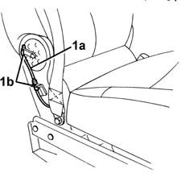
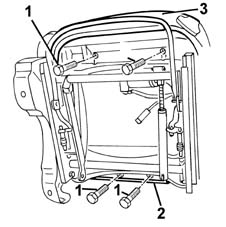
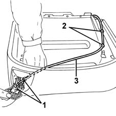
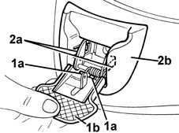
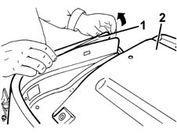
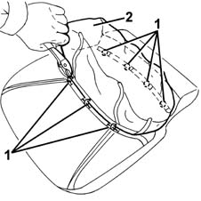

7045A18 FRONT SEAT BACKREST ASSEMBLY (ONE), LEFT OR RIGHT - R.R.
- Path
- Procedures > 70 FITTINGS > 7045 FRONT SEATS > 7045A front seat assembly > 7045A18 FRONT SEAT BACKREST ASSEMBLY (ONE), LEFT OR RIGHT - R.R.
- Kind
- repair procedure (removal / refitting; the operation number is the code)
- Applies to
- all engines; all production periods
- Interactive page
- https://sloeber94.github.io/elrnDB-fMltpl/en/#/2892222
Applies to: all engines; all production periods
 Removing
Removing
 Refitting
Refitting7045A42 l/h or r/h front seat guard (one) - r+r (right and left)
1. Disconnect the squab control cable (1a) from the retainers (1b).

Applies to: all engines; all production periods
1. Undo the four bolts securing the cushion to the frame.
2. Disengage the cushion cover anchor section.
3. Remove the cushion assembly.

Applies to: all engines; all production periods
1. If necessary, pull the handle and disconnect the cable.
2. Disconnect the cable from the retaining clips.
3. Remove the cable.

Applies to: all engines; all production periods
1. Open the squab control lever and, using a screwdriver, disengage the retainers (1a) then remove the lever trim (1b).
2. Using a screwdriver, disengage the retainers (2a) and remove the moulding (2b).

Applies to: all engines; all production periods
1. Remove the cover surround. Start at one end.
2. Remove the metal part of the seat.

Applies to: all engines; all production periods
1. Cut the retainers securing the cover to the padding.
2. Remove the cover from the padding.

Applies to: all engines; all production periods
Refitting
RemovingCheck that the cushion cover and padding are intact and show no signs of damage.
Secure the cover to the padding using the retaining rings.
Fit the metal part of the seat and fit the cover surround.
Fit the squab control moulding and engage the retainers.
Fit the lever trim and engage the retainers.
If removed, fit the cable and secure it with the retaining bands.
Connect the cable to the handle.
Refit the cushion assembly to the frame.
Refit the cushion cover anchor section.
Mould the cover onto the padding.
Tighten the four bolts securing the cushion to the frame.
Connect the squab control cable to the retainers.
7045A42 l/h or r/h front seat guard (one) - r+r (right and left)